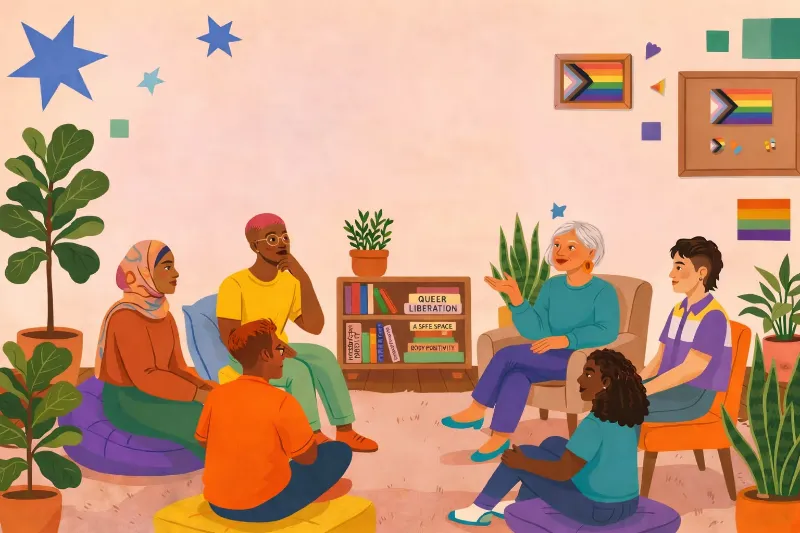
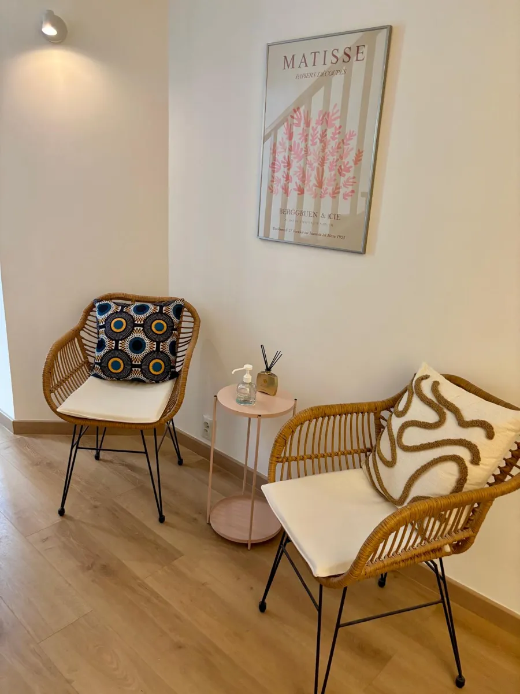
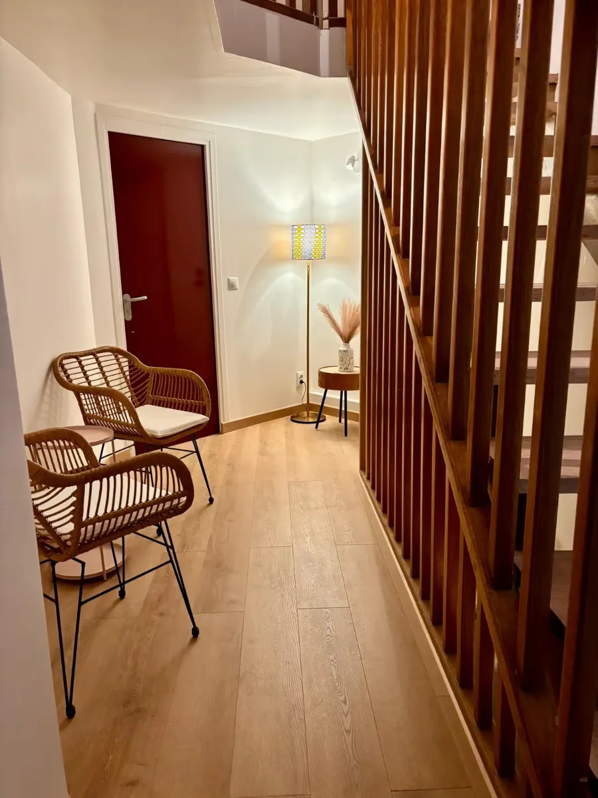
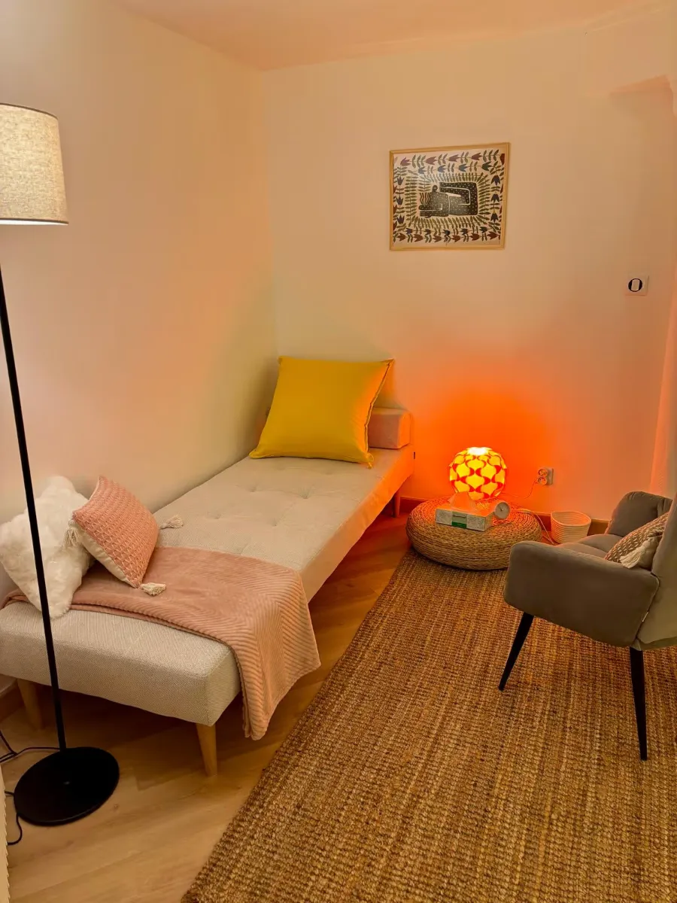
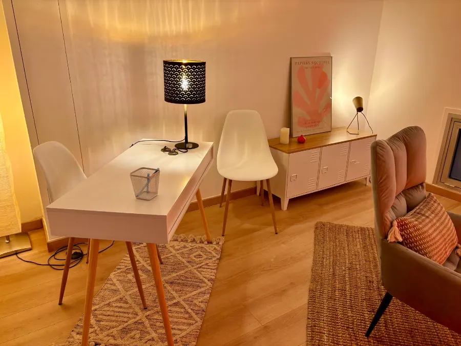
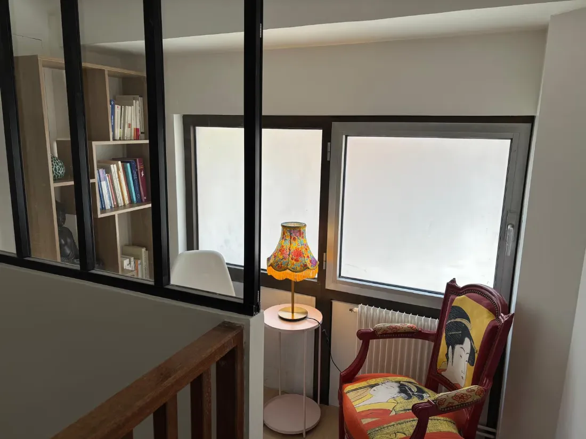

Mon approche
Inclusive, non-jugeante, attentive aux inégalités, discriminations et violences systémiques. Une perspective féministe et intersectionnelle du soin.
Sexologue à Paris 20e · en cabinet et en ligne
Consultations individuelles ou de couple pour aborder les questions de sexualités et de vie affective et relationnelle. Approche féministe, intersectionnelle et centrée sur la personne.





Qui suis-je ?
Je suis aussi conseillère conjugale et familiale et animatrice d'éducation à la sexualité. J'exerce à Paris, à l'hôpital, en CeGIDD et en cabinet libéral.
Mon parcours est pluridisciplinaire : sciences politiques, puis un Master d'études de genre, avant de me spécialiser dans la santé sexuelle et la sexothérapie.
J'ai commencé mes études par une formation en lettres et sciences humaines, puis j'ai obtenu une licence de sciences politiques (Université Paris 8) et enfin un Master d'études de genre (Université Panthéon-Sorbonne). Ce master m'a permis de m'intéresser à la sociologie du genre dans les relations humaines, aux identités de genre, aux sexualités, mais aussi aux inégalités, aux discriminations et aux violences systémiques.
Suite à un stage à la Maison des femmes de Saint-Denis, j'ai choisi de m'orienter vers la prise en soin et les métiers de l'écoute. J'ai réalisé ma formation de conseillère conjugale et familiale et d'animatrice d'éducation à la sexualité à l'École des Parents et des Éducateurs, puis de nombreux stages en structures publiques (centres de santé sexuelle, hôpitaux, associations comme le Planning familial). J'ai ensuite travaillé trois ans au centre de santé sexuelle de la ville d'Aubervilliers.
En parallèle, je me suis spécialisée en sexologie : diplôme universitaire de santé sexuelle et droits humains (Université Paris Cité), puis deux années de DIU de sexologie et sexothérapie. Diplômée depuis septembre 2025, je travaille comme sexologue à la fois dans des structures publiques (hôpital et CeGIDD) et en libéral.
À propos de la sexologie

Inclusive, non-jugeante, attentive aux inégalités, discriminations et violences systémiques. Une perspective féministe et intersectionnelle du soin.
Quand une difficulté ou un questionnement sur la vie intime, sexuelle ou relationnelle génère de la souffrance. Les objectifs sont fixés ensemble, à votre rythme.
Je ne relève d'aucune profession médicale ou paramédicale : pas d'auscultation ni de prescription. Le suivi porte sur les aspects psycho-sociaux.
Baisse ou absence de désir, désir hyperactif, décalage de désir dans le couple.
Difficultés au niveau des sensations d'excitation, dysfonctions érectiles, éjaculation rapide.
Difficultés ou impossibilité à ressentir du plaisir et/ou à atteindre l'orgasme.
Dyspareunies, vaginisme, vulvodynies.
Violences sexistes, sexuelles, de genre, conjugales, intrafamiliales.
Questions de genre et d'orientations sexuelles.
Cette liste n'est pas exhaustive : tout besoin d'échanger sur la sexualité est un motif légitime de consultation.
Sur Resalib, en choisissant cabinet ou visio. Vous pouvez aussi m'écrire avant.
Nous faisons connaissance et explorons ce qui vous amène, sans jugement.
Nous fixons ensemble les objectifs et le rythme des séances.
Tout besoin ou envie d'échanger sur la sexualité, la vie affective ou relationnelle est un motif légitime de consultation.
Oui.
Non. Je ne relève d'aucune profession médicale ou paramédicale.
2 rue des Amandiers, 75020 Paris. Voir l'itinéraire
Écrivez-moi, je vous réponds personnellement et en toute confidentialité.